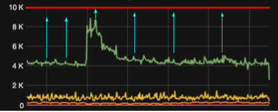

Serverless e AWS Lambda
Publicado em:
@cristianoperez
Todos os dias surgem novas buzzwords no mercado, cada uma relacionada a uma nova tecnologia/metodologia que promete revolucionar o modo de fazer as coisas; uma das mais recentes é a Serverless. Ao longo desse post vou tentar descrever o que é essa nova buzzword e vai de você analisar se faz sentido ou não aplicá-la ao seu projeto.
Serverless
Serverless permite a você construir e executar aplicações sem ter que gerenciar nenhuma infraestrutura. Sua aplicação ainda roda em servidores, mas todo o gerenciamento vai ser feito pelo Vendor (AWS, GCP, Azure, etc). Não é mais necessário provisionar, gerenciar ou escalar servidores para executar sua aplicação. Serverless são funções executadas em containers stateless, efêmeros e gerenciados por terceiros.
O ciclo de vida pode ser representado assim:

- O browser faz uma chamada REST para o endpoint do API Gateway
- O API Gateway faz a chamada da função baseado no endpoint que é chamado
- A função relacionada ao endpoint chamado é executada em um container que foi criado apenas para executá-la
- O container em qual a função foi executada é destruído
Note que em nenhum momento nos preocupamos como seria executada a nossa função, apenas escrevemos o código dela e pedimos para alguém executá-la. Como ela vai fazer isso, escalar quantidade de máquinas e gerenciar a disponibilidade não é problema nosso!
Além das vantagens infraestruturais já citadas, a vantagem da economia, pois pagamos apenas pelo o que realmente usamos. Em uma arquitetura tradicional, boa parte dos recursos do servidor (memória / CPU / rede / disco) ficam ociosos a maior parte do tempo, sendo utilizados apenas em momentos específicos. Estamos portanto pagando por recursos ociosos, porém não podemos nos dar ao luxo de abrir mão destes pois, em um momento de alta demanda, a falta pode tornar-se um grande problema que até mesmo pode derrubar o sistema. Um exemplo disso pode ser observado no gráfico abaixo:
 Analisando o gráfico, podemos perceber que a linha vermelha representa a capacidade máxima provisionada, a verde o tráfego, as setas azuis são recursos ociosos que pagamos mas que só utilizamos por cerca de 10% do tempo.
Uma arquitetura Serverless age em cima desses dois problemas: recursos ociosos e aumentos súbitos e/ou spike de requisições. Como não precisamos nos preocupar com infra/provisionamento/escalabilidade já que só é cobrado pelo o que for executado, nunca mais teremos máquinas sendo executadas com recursos ociosos. Você entrega seu código para o Vendor e ele se vira para executá-lo.
Stateless
Todo serverless por natureza é stateless (lembra da imagem do ciclo de vida?), então, no final da execução, nosso container é destruído, levando consigo todas as informações que foram guardadas localmente como: variáveis estáticas, arquivos da pasta /tmp e estado da memória RAM (tenha isso em mente quando for desenvolver algo que utilize serverless). Uma opção para não perdê-los seria salvá-los em outro lugar como um banco relacional, Dynamo, Redis ou até mesmo no S3.
AWS Lambda
Como serverless por si só representa um conjunto de conceitos, precisamos de alguém para implementá-lo! Entre os serviços mais usados no mercado temos: AWS Lambda, Google Cloud Functions, Azure Functions e Apache OpenWhisk (este último open-source). Nesse post, por questões de abrangência de conhecimento da minha parte, vamos utilizar o AWS Lambda.
Lambda traz todos os benefícios já citados: nenhum servidor para provisionar e gerenciar, escala horizontal automática, nada de pagar por recurso ocioso, tolerância a falha e alta disponibilidade. É possível criar funções utilizando Java, Python, Node, C# e Go mais recentemente. As funções podem ser executadas a partir das seguintes fontes de eventos:
- Resposta a eventos de outros produtos da AWS
É possível executar uma função como resposta a eventos (callback) de outros produtos da AWS, como por exemplo quando queremos executar a função sempre que uma mensagem for adicionada na fila xpto do SQS, ou quando for feito um update na tabela user do DynamoDB, ou até mesmo quando for deletado um arquivo com extensão .properties do bucket data.production no S3.
- Chamadas REST utilizando o Amazon API Gateway
É possível criar um endpoint no Amazon API Gateway e associar ele a uma função.
- AWS SDK
Caso você já tenha um sistema e precise chamar uma função, o próprio SDK da AWS te proporciona isso.
- Agendamento
É possível agendar funções para serem executadas em determinados horários e dias (utilizando Expressões Cron para isso).
Segurança
Como em todos os produtos da Amazon, é possível utilizar roles e VPC específicas para cada função.
Precificação
A precificação é feita baseada no número de execuções da função e sua duração.
- Duração
A partir do momento em que a função começa a ser executada, é iniciada a cobrança, sendo que o tempo é sempre arredondado para os 100ms mais próximo. Logo, uma execução com 2ms e outra com 99ms terão o mesmo valor. E o valor também varia pela quantidade de memória alocada para a função, cerca de 0,00001667 USD a cada GB/segundo usado.
- Quantidade
0,20 USD por 1 milhão de solicitações. Depois disso 0,0000002 USD por solicitação adicional.
- Free tier
Para incentivar o uso do Lambda, a AWS oferece um nível grátis, 1 milhão de solicitações por mês e 400GB/segundo de memória por mês.
Limites
A AWS colocou alguns limites que podem complicar a sua vida e devem ser levados em conta na hora do desenvolvimento. Veja abaixo:
| Recurso | Limite |
|---|---|
| Memória | 128mb até 3GB |
| Tempo máximo de execução | 300s (5min) |
| Execuções paralelas | 1000 |
A AWS quer que você utilize o Lambda porém sem canibalizar seus outros produtos, então ela colocou alguns limites que podem complicar a sua vida. Vamos ver como esses limites afetam a sua vida.
- Memória
Este recurso deve ser configurado manualmente para cada função (não é elástico). Agora um ponto importante: quantas vezes você criou uma função sabendo quanto de memória ela consumia? Lembre-se: quanto maior a memória alocada para executar aquela função, mais caro você pagará! Facilitaria (e muito) se cada função tivesse memória elástica, sendo cobrada com base no seu uso e não em uma quantidade fixa alocada, e faria mais sentido se pudéssemos apenas limitar o tamanho máximo de consumo desta memória. Saiba que os limites no geral são o suficiente para executar as funções de propósito geral, porém, se for necessário algo mais pesado, talvez seja melhor subir uma instância EC2 de uma máquina mais potente!
- Tempo
Como a AWS não quer ninguém utilizando o Lambda para rodar tasks grandes e pesadas ou long running applications (afinal para isso existem outros produtos), ela restringe o tempo máximo de execução em 5min. Esse tempo é configurado para cada função, podendo variar de 1s até 5min. Após o tempo limite de execução ser atingido, ela é cortada sem nenhum tipo de callback, apenas lançando uma exception no CloudWatch.
- Execuções paralelas
Esse pode ser um dos mais problemáticos, pois como no Lambda não existe separação entre ambientes, funções executadas em prod, dev ou teste entram no mesmo contador. Imagine o cenário onde um desenvolvedor está criando uma nova funcionalidade que dispara funções lambda. Digamos que essa chamada da função fique dentro de um loop (FOR/WHILE) e, ao testar esta funcionalidade, esta função é chamada tantas vezes que ultrapassa o limite de 1000 execuções paralelas. De fato, esse teste em dev vai afetar todas as funções de prod que vão começar a ser enfileiradas ou sequer serão executadas, degradando desta forma a performance geral (incluindo o ambiente de prod). Durante a re:Invent 2017 foi anunciado algo para tentar minimizar esse problema: é possível limitar a quantidade de execuções paralelas para cada função.
Esses são apenas alguns limites. No site da AWS você pode encontrar todos os limites.
Vendor lock-in
O primeiro passo ao utilizar uma arquitetura serverless é escolher o vendor (AWS, GCP, AZURE). Não importa muito a sua escolha, pois no final das contas você estará preso a ele, principalmente quando as funções começam a se integrar e ser ativadas por eventos de outros produtos deste vendor, como por exemplo quando utilizamos serviços úteis como filas (SQS, GCP pub/sub).
Um ponto para se questionar é: como você pode migrar uma função do AWS Lambda para o Cloud Functions e fazer com que ele mantenha a integração com a fila do SQS que ativa esta função? A resposta é que o trigger nativo que a AWS fornece é perdido, então será necessário um certo trabalho de desenvolvimento em cima e provavelmente uma mudança no desenho da arquitetura (e muito boilerplate code) para fazer essa integração, tornando tudo muito custoso!
Situações de uso
Ideais
-
Coisas pequenas e rápidas Uma rápida análise nos limites nos permite ver que esse é o público alvo do Lambda.
-
Processamento assíncrono em resposta a eventos de outros produtos AWS A facilidade e o nível de granularidade na integração com outros produtos do vendor torna tudo muito simples.
-
Operação com padrão de consumo FLAT com spikes periódicos Para quê manter uma grande infraestrutura de pé com o consumo de recurso na casa dos 20% se em apenas alguns momentos do dia o consumo sobe para 80~90%?
-
Funcionalidades que ficam com boa parte do tempo com recurso ocioso Mesmo caso da anterior: tem algum sistema interno que é pouco ou quase nunca utilizado, porém a máquina está sempre rodando e gastando recursos? Talvez faça sentido ele ser um Lambda.
Não ideais
- Para tudo
Lambdas são legais, fáceis de gerenciar, de rápido desenvolvimento e sem infra para se preocupar. Mas têm um preço e, caso seja um serviço com um número de requisições muito alto, no final do mês a conta não vai fechar. Talvez faça mais sentido usar o bom e velho EC2.
- Processamentos longos
Como já foi dito anteriormente, temos o limites de até 5min (depende do timeout que você configurou para a função) para sua função ser executada; após isso a AWS mata a execução.
- Processamentos com alto uso de RAM
Mesmo após a mudança para 3GB no limite de RAM para cada função, existem outros serviços da Amazon que são capazes de lidar melhor com esse tipo de processamento. Aqui também temos a mesma limitação do tempo, caso sua função comece a usar mais que 3GB ou o limite que você setou para função, ela é encerrada automaticamente.
- Ambientes multi cloud
Como uma das grandes facilidades são os triggers com outros produtos no vendor, não faz muito sentido tentar integrar AWS Lambda com GCP pub/sub.
Um novo mundo que não para de crescer
Durante a re:Invent 2017, foram anunciadas uma grande quantidade de novidades para o Lambda, mostrando que a Amazon tem apostado fortemente na tecnologia. Algumas ainda estão em beta mas estarão disponíveis em breve. Nesse link temos tudo que foi anunciado e um comentário falando porque a funcionalidade é importante.
Conclusão
Existem vários outros tópicos os quais não citei aqui, como o uso de logging, escrever tests, execução de deploys, boas práticas em geral, etc. Todos estes assuntos podem ser explorados em um próximo post.
Falamos muito aqui a respeito do mundo mágico do serverless e como ele pode tornar a vida do desenvolvedor mais produtiva, pela facilidade de gerenciar e escalar as coisas quando o utilizamos. Porém isso qualquer engenheiro de vendas das plataformas citadas neste post pode te falar, então o importante é saber das limitações e restrições que existem em cada uma delas.
Serveless é um assunto muito novo no mercado. Para você ter uma ideia, o Lambda nasceu há pouco (em meados de 2014), enquanto o Cloud Functions é mais velhinho (nascido em 2011). Apesar disso, trata-se de uma tecnologia que vem sendo utilizada em grande escala e só tende a melhorar nos próximos anos.
Existem alguns frameworks que facilitam bastante a vida na hora de criar funções, como o Serverless framework, e que trabalham de maneira genérica para abranger os principais provedores do mercado.
Agora é com você! Verifique se sua necessidade pode ser atendida por essa tecnologia, valide os prós e os contras para decidir se é uma boa utilizá-la ou não!